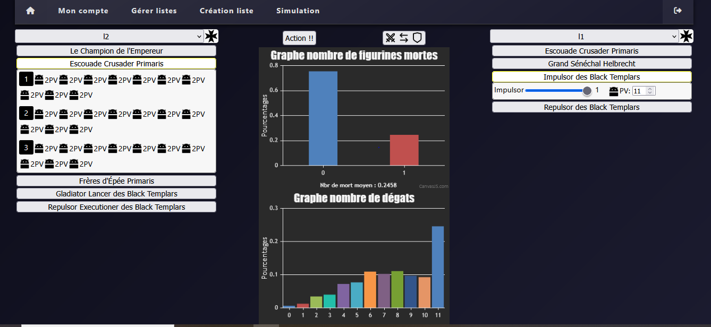
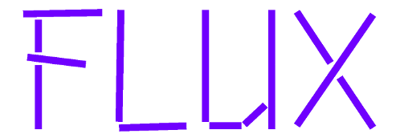

Portfolio BTS SIO option SLAM
Lafleur

Description :
L'objectif du projet "Lafleur" consiste en la création d'un site web pour une entreprise du même nom.
Lafleur est composé d'un menu de navigation permettant d'accéder aux différentes pages du site telles que la liste des produits par catégories.
Ce site permet d'ajouter des produits dans un panier puis de passer une commande si l'utilisateur appartient à la base de données de l'entreprise.
Le récapitulatif de cette commande sera ensuite enregistré dans la base de données.
Langage utilisé : PHP, SQL, HTML et CSS.
Langage utilisé : PHP, SQL, HTML et CSS.
Blackjack

Description :
Ce projet est un simulateur du jeu "Blackjack".
Langage utilisé : Javascript, HTML et CSS.
Langage utilisé : Javascript, HTML et CSS.
Site web pour portfolio
Description :
Ce site a été créé afin de présenter mon portfolio pour l'épreuve du BTS
Langage utilisé : HTML et CSS.
Langage utilisé : HTML et CSS.
TP GLPI

Description :
Pendant ce TP j'ai pu configurer et manipuler GLPI, un logiciel libre de gestion des services informatiques.
J'ai aussi pu créer un ticket d'incident puis effectuer les étapes nécessaires à la résolution de ce ticket dans GLPI.
TP Installation d'un réseau d'entreprise

Description :
Pendant ce TP, j'ai pu installer et configurer un réseau d'entreprise utilisant Windows 2016 Server et
des clients Windows 10. L'unité d'organisation Laser Informatique est divisée par d'autres unités d'organisations (Brest, Nantes et Rennes) ainsi que par des
groupes globaux (informatique, commercial et secrétariat). Les utilisateurs possèdent des autorisations différentes en fonction de leur affiliation.
Projet PPE
Description :
Ce projet s'appelle StatHammer et a été effectué en groupe.
L'objectif de cette application est d'aider les joueurs de Warhammer 40k lors d'une partie en simulant des affrontements entre des unités (groupe de figurines).
Ces unités appartiennent à des listes créées par l'utilisateur et sont stockées dans une base de données. L'application prend en compte le choix des armes, et des points de vie des figurines avant l'affrontement.
Langage utilisé : Java,Javascript,HTML,SQL et CSS.
L'objectif de cette application est d'aider les joueurs de Warhammer 40k lors d'une partie en simulant des affrontements entre des unités (groupe de figurines).
Ces unités appartiennent à des listes créées par l'utilisateur et sont stockées dans une base de données. L'application prend en compte le choix des armes, et des points de vie des figurines avant l'affrontement.
Langage utilisé : Java,Javascript,HTML,SQL et CSS.
Projet Stage Flux
Description :
Pendant ce stage j'ai principalement travaillé sur Dolibarr un ERP open source. J'ai pu mettre en forme les données de Flux,
pour ensuite implémenter dans une base de données. J'ai aussi pu télécharger et configurer plusieurs modules correspondant au besoin de cette entreprise.
De plus j'ai aussi effectué diverses missions tels que la mise en place d'un point de vente et la synchronisation d'agenda.
Projet Stage Cooperl
Description :
Durant ce stage j'ai pu participer à plusieurs projets dont deux en autonomie.
Liste des missions effectués :
Langage utilisé : Google Apps Script.
- Projet autonome : Récupération et exportation automatique des tarifs en fonction d'une pièce jointe d'un mail
- Projet autonome : création d'évènements agenda lié à un employé en fonction d'un formulaire
- Calcul du temps actif des machines de production ainsi que leur production théorique
- Calcul des bénéfices et coûts de chaque sites et sections
- Fonction pour récupérer les thèmes d'un questionnaire en fonction des sites, et pour poser des questions aléatoires en fonction de thème ayant des priorités différentes.
- Correction de code d'un autre projet.
Langage utilisé : Google Apps Script.